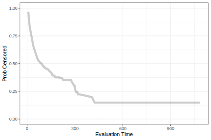

set.seed(1)
runif(3)
#> [1] 0.2655087 0.3721239 0.5728534
# Get a new set of random numbers:
set.seed(2)
runif(3)
#> [1] 0.1848823 0.7023740 0.5733263
# We can reproduce the old ones with the same seed
set.seed(1)
runif(3)
#> [1] 0.2655087 0.3721239 0.5728534Annotations
01 - Introduction
üëÄ
This page contains annotations for selected slides.
There’s a lot that we want to tell you. We don’t want people to have to frantically scribble down things that we say that are not on the slides.
We’ve added sections to this document with longer explanations and links to other resources.
02 - Data Budget
The initial split
What does set.seed() do?
We’ll use pseudo-random numbers (PRN) to partition the data into training and testing. PRN are numbers that emulate truly random numbers (but really are not truly random).
Think of PRN as a box that takes a starting value (the “seed”) that produces random numbers using that starting value as an input into its process.
If we know a seed value, we can reproduce our “random” numbers. To use a different set of random numbers, choose a different seed value.
For example:
If we don’t set the seed, R uses the clock time and the process ID to create a seed. This isn’t reproducible.
Since we want our code to be reproducible, we set the seeds before random numbers are used.
In theory, you can set the seed once at the start of a script. However, if we do interactive data analysis, we might unwittingly use random numbers while coding. In that case, the stream is not the same and we don’t get reproducible results.
The value of the seed is an integer and really has no meaning. Max has a script to generate random integers to use as seeds to “spread the randomness around”. It is basically:
cat(paste0("set.seed(", sample.int(10000, 5), ")", collapse = "\n"))
#> set.seed(9725)
#> set.seed(8462)
#> set.seed(4050)
#> set.seed(8789)
#> set.seed(1301)03 - What Makes A Model?
What is wrong with this?
If we treat the preprocessing as a separate task, it raises the risk that we might accidentally overfit to the data at hand.
For example, someone might estimate something from the entire data set (such as the principle components) and treat that data as if it were known (and not estimated). Depending on the what was done with the data, consequences in doing that could be:
- Your performance metrics are slightly-to-moderately optimistic (e.g. you might think your accuracy is 85% when it is actually 75%)
- A consequential component of the analysis is not right and the model just doesn’t work.
The big issue here is that you won’t be able to figure this out until you get a new piece of data, such as the test set.
A really good example of this is in ‘Selection bias in gene extraction on the basis of microarray gene-expression data’. The authors re-analyze a previous publication and show that the original researchers did not include feature selection in the workflow. Because of that, their performance statistics were extremely optimistic. In one case, they could do the original analysis on complete noise and still achieve zero errors.
Generally speaking, this problem is referred to as data leakage. Some other references:
- Overfitting to Predictors and External Validation
- Are We Learning Yet? A Meta Review of Evaluation Failures Across Machine Learning
- Navigating the pitfalls of applying machine learning in genomics
- A review of feature selection techniques in bioinformatics
- On Over-fitting in Model Selection and Subsequent Selection Bias in Performance Evaluation
04 - Evaluating Models
An Example Model Fit
First, in regards to the weird formula assembly: this is a lot easier if we use a recipe.
Secondly, a popular feature of the proportional hazards model is that it can use stratification; in this case, a different baseline hazard is created for each level of some factor variable. When using the survival package, you can use a “special” function to add this to the model:
cph_strata_fit <-
proportional_hazards() %>%
fit(event_time ~ latitude + longitude + strata(sex), data = cat_train)The glmnet package can also use stratification, but its syntax is unconventional. tidymodels allows you to use the same syntax from the survival package to compute this model:
glmn_strata_fit <-
proportional_hazards(penalty = 0.01) %>%
set_engine("glmnet") %>%
fit(event_time ~ latitude + longitude + strata(sex), data = cat_train)This is a little model complex when using a workflow.
In R, the model formula does various things: it specifies statistical details (e.g., random effects), data transformations (via in-line functions), encodes data as dummy variables, and so on.
When using add_formula() with a workflow, that formula exclusively encodes data and is not directly executed by the model function. This means that if you have a formula with special inline functions, you must add the formula another way. This can affect adding a strata variable for a censored regression model, a smooth for a generalized additive model, random effects for the lme4 package, etc.
Suppose we have a factor to use as strata (such as sex in our cat data). Since that is a factor, and survival::cph() needs numeric data, add_formula() will convert sex to a dummy variable. That would prevent you from using it in strata().
For workflows with special formulas, we suggest using add_variables() instead of add_formula(). To use the formula intended for the underlying model, there is an option to add_model() to do so. For example:
workflow() %>%
add_variables(
# Adds raw variables with tidyr-like specifications. These will
# remain in the data as-is.
outcomes = c(event_time),
predictors = c(latitude, longitude, sex)
) %>%
add_model(
proportional_hazards(),
# Your model-specific formula goes here:
formula = event_time ~ latitude + longitude + strata(sex)
) There are more examples in Section 7.4.1 of Tidy Models with R.
Concordance
Since risk regression and parametric survival models are modeling different characteristics (e.g. relative hazard versus event time), their linear predictors will be going in opposite directions.
For example, for parametric models, the linear predictor increases with time. For proportional hazards models the linear predictor decreases with time (since hazard is increasing). As such, the linear predictors for these two quantities will have opposite signs.
tidymodels does not treat different models differently when computing performance metrics. To standardize across model types, the default for proportional hazards models is to have increasing values with time. As a result, the sign of the linear predictor will be the opposite of the value produced by the predict() method in the engine package.
This behavior can be changed by using the increasing argument when calling predict() on a parsnip model object.
Converting to Events
The predicted class probabilities are then:
\[ \begin{align} Pr[y_{i\tau} = 1] &= 1- \hat{S}(\tau; \boldsymbol{x}_{i})\notag \\ Pr[y_{i\tau} = 0] &= \hat{S}(\tau; \boldsymbol{x}_{i}) \notag \end{align} \]
Dealing with Missing Outcome Data
For our causal inference approach, we need to compute \(\hat{C}(t^*;\boldsymbol{x}_{i})\), the probability that sample \(i\) is censored at some time \(t^*\).
We have to consider how to compute the time point \(t^*\). Let’s say we are predicting what will happen at \(t^* = 17\) days.
First, we are predicting future events, so we can only assume that we have data prior to 17 days. For this reason, when we use the observed time to compute the probability of censoring, we do it just prior to \(t^*\), at \(t_i - \epsilon\) for some very small \(\epsilon\).
Second, following Graf et al. (1999), we calculate the censoring probability differently for each event class:
\[ t_i^*= \begin{cases} t_i - \epsilon & \text{if }t_i \le \tau \\ \notag \tau - \epsilon & \text{if }t_i > \tau \notag \end{cases} \]
How exactly do we estimate \(\hat{C}(t^*;\boldsymbol{x}_{i})\)? We currently only estimate the probability of non-informative right censoring (i.e., the predictors \(x_i\) are ignored). We may expand this API in the future when you have informative censoring.
Our estimator \(\hat{C}(T;x_i)\) is the “reverse Kaplan-Meier” (RKM, Korn (1986)) curve that inverts the event indicator.
The RKM curve is attached to the parsnip model object. Its curve:

Now let’s look at how the probabilities are computed for four specific cats:
We’ve truncated the x-axis for readability.
From this:
At \(\tau = 10\), all four cats are used to measure performance and \(t^*_i = t_i - \epsilon\).
At \(\tau = 30\), only two cats are used and \(t^*_1 = 36 - \epsilon\) and \(t^*_4 = 30 - \epsilon\).
How the censoring probability varies over time can greatly impact the metrics. For the demonstration set, there are very few usable outcomes in the late stages of the analysis, but these have large weights.
Case weights \(w_i(\tau)\) are the inverse of these probabilities and \(W(\tau)\) is their sum.
Brier Scores Over Evaluation Time
It’s reasonable to wonder about the uncertainty in these statistics, especially for a sample size of 50. When we get to resampling (in a bit), we will have standard errors of statistics that we can use to make confidence intervals.
We can use the bootstrap method to compute confidence intervals for a single data set (e.g., a validation set). A tidymodels function called int_pctl() is available for this purpose (more information). This will be able to work directly with objects resulting form resampling or tuning functions (again, in a bit) but for a single data set, we’ll need to create a wrapper that computes the statistic for different bootstrap samples.
brier_wrapper <- function(split) {
dat <- analysis(split)
brier_survival(dat, truth = event_time, .pred) %>%
# Puts the data into a 'tidy' format:
dplyr::select(term = .eval_time, estimate = .estimate)
}We execute that on every bootstrap sample and then use int_pctl() on the results.
set.seed(482)
brier_ci <-
demo_cat_preds %>%
bootstraps(times = 2000) %>%
mutate(stats = map(splits, brier_wrapper)) %>%
int_pctl(stats, alpha = 0.10) # 90% intervalsYep, statistics from 50 cats has a lot of variation!
brier_ci %>%
ggplot(aes(term, .estimate)) +
geom_line() +
geom_ribbon(
aes(ymin = .lower, ymax = .upper),
alpha = 1 / 10,
fill = "blue") +
labs(x = "Evaluation time", y = "Brier score")Cross-validation
In the future, we might enable the strata argument of the resampling functions to accept Surv objects and stratify by the censoring indicator.
Bootstrapping
Davison and Hinkley (1997) have specific methods for bootstrapping censored data. These are not currently implemented in the rsample package.
Evaluating model performance
Note that there is a column for std_err so that we can compute confidence intervals from these.